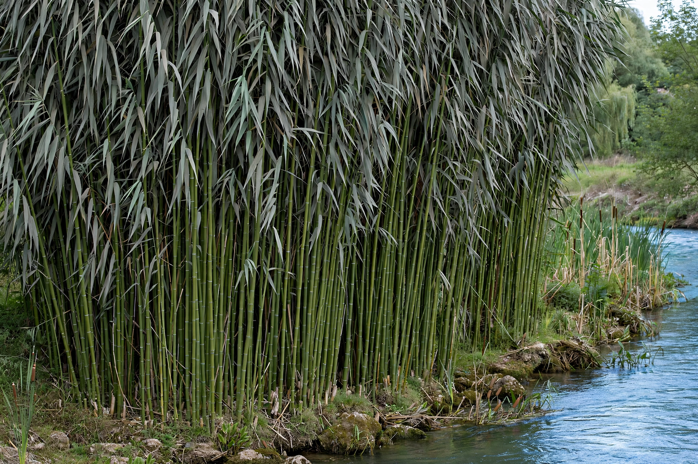

Arundo donax
| Scientific classification | |
|---|---|
 | |
| Kingdom | Plantae |
| Order | Poales |
| Family | Poaceae |
| Genus | Arundo |
| Species | A. donax |
| Binomial name | Arundo donax L. |
Arundo donax is a tall perennial cane grass commonly known as giant cane, elephant grass, carrizo, arundo, Spanish cane, Colorado river reed, wild cane, and giant reed. Native to the Mediterranean Basin and the Middle East eastwards towards Asia, it has been widely planted and has naturalised around the world, where it is often a serious invasive species.
Description
The species grows hollow, bamboo-like canes 2–6 metres tall from thick creeping rhizomes. Its grey-green leaves are 30–60 cm long, and the flower panicles are dense, feathery plumes 40–60 cm long appearing in late summer. Outside its native range the plant rarely produces viable seed and spreads almost entirely by rhizome fragments washed downstream or moved in soil.
Uses
Giant reed has been cultivated for thousands of years. Its canes are the traditional source of reeds for woodwind instruments such as the oboe, bassoon, clarinet and saxophone, and of pipes for panpipes and ney flutes. It is also used for fencing, trellises, walking sticks, fishing rods, and increasingly investigated as a high-yield bioenergy crop.
Invasiveness
In riparian habitats in California, Texas, Australia and elsewhere, A. donax forms dense monocultures that displace native cottonwood and willow vegetation, consume large amounts of water, increase fire risk, and alter flood regimes. It is listed among the world's worst invasive alien species, and large-scale eradication programmes rely on herbicides, mechanical removal, and biological control agents such as the arundo wasp (Tetramesa romana).
See also
This article is a recreation written from memory for the muse-webcrawl project.